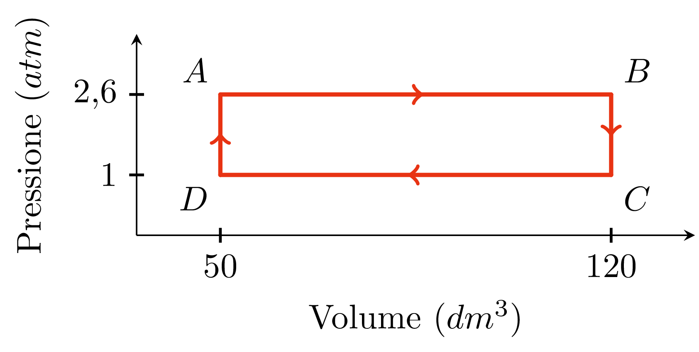

Una macchina termica lavora utilizzando 2 mol di un gas ideale secondo il ciclo mostrato in figura.
Calcola:
- Le temperature nei punti A, B, C e D.
- Il lavoro prodotto ad ogni ciclo
- Il rendimento della macchina termica, sapendo che il calore assorbito ad ogni ciclo vale 57,7 kJ.
- Il rendimento di una macchina termica che segue il ciclo di Carnot e opera tra la temperatura massima e minima calcolate al primo punto dell'esercizio.
Soluzione:
1. Per risolvere il primo punto si può usare la legge dei gas perfetti:
$$P V = n R T$$
Da cui:
$$T = \frac{P V}{n R}$$
Per esempio calcoliamo ££T_A££:
$$\begin{aligned}
T_A &= \frac{P_A V_A}{n R} = \\[10pt]
&= \frac{101325\ Pa \cdot 0{,}05\ m^3}{2\ mol \cdot 8{,}314\ \tfrac{J}{mol \cdot K}} = \\[10pt]
&= 782\ K
\end{aligned}$$
Allo stesso modo si possono trovare ££T_B££, ££T_C££ e ££T_D££:
$$\begin{aligned}
T_B &= 1876\ K \\[10pt]
T_C &= 721\ K \\[10pt]
T_D &= 301\ K
\end{aligned}$$
2. Il lavoro prodotto ad ogni ciclo corrisponde all'area del rettangolo ABCD.
In particolare, il lavoro sarà positivo perché le frecce ruotano in senso orario.
$$ L = \Delta P \cdot \Delta V $$
££\Delta V££ e ££\Delta P££ si possono ricavare direttamente dal grafico:
$$\begin{aligned}
\Delta V &= V_C - V_D = \\[10pt]
&= 0{,}12\ m^3 - 0{,}05\ m^3 = \\[10pt]
&= 0{,}07\ m^3 \\[10pt]
\Delta P &= P_A - P_D = \\[10pt]
&= 263445\ Pa - 101325\ Pa = \\[10pt]
&= 162120\ Pa
\end{aligned}$$
Da cui:
$$ L = 11348\ J$$
3. Il rendimento di una macchina termica si può calcolare con:
$$ \eta = \frac{L}{Q_{ass}}$$
Nel nostro caso:
$$\begin{aligned}
\eta &= \frac{11384\ J}{57700\ J} = \\[10pt]
&= 0{,}197
\end{aligned}$$
4. Infine, il rendimento di una macchina di Carnot si calcola con:
$$ \eta_C = 1 - \frac{T_2}{T_1}$$
Dove ££T_2££ e ££T_1££ sono le temperature mantenute durante le trasformazioni isoterme.
Nello specifico, ££T_2££ è quella più bassa che nel nostro caso corrisponde a ££T_D££,
mentre ££T_1££ è quella più alta che nel nostro caso corrisponde a ££T_B££.
$$\begin{aligned}
\eta_C &= 1 - \frac{T_D}{T_B} = \\[10pt]
&= 1 - \frac{301\ K}{1876\ K} = \\[10pt]
&= 0{,}840
\end{aligned}$$